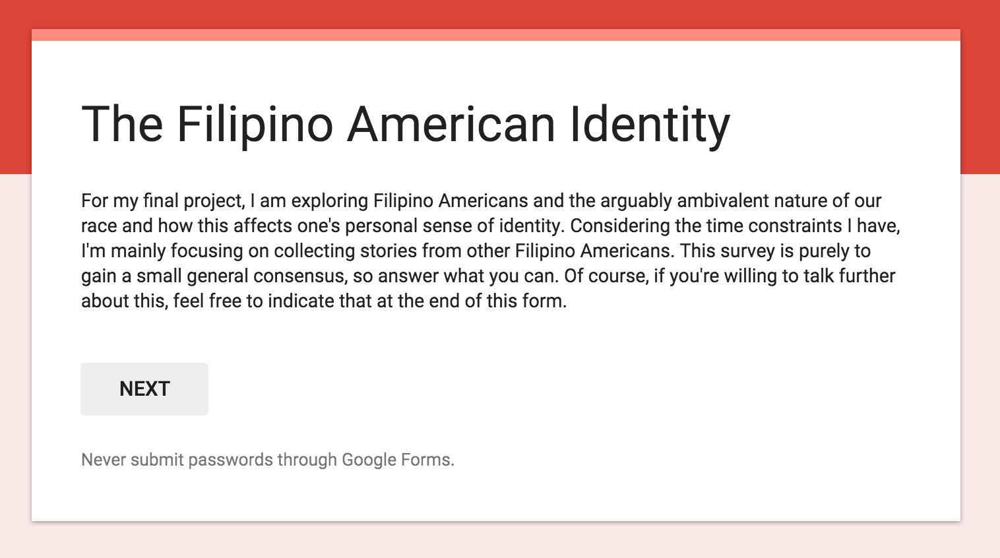
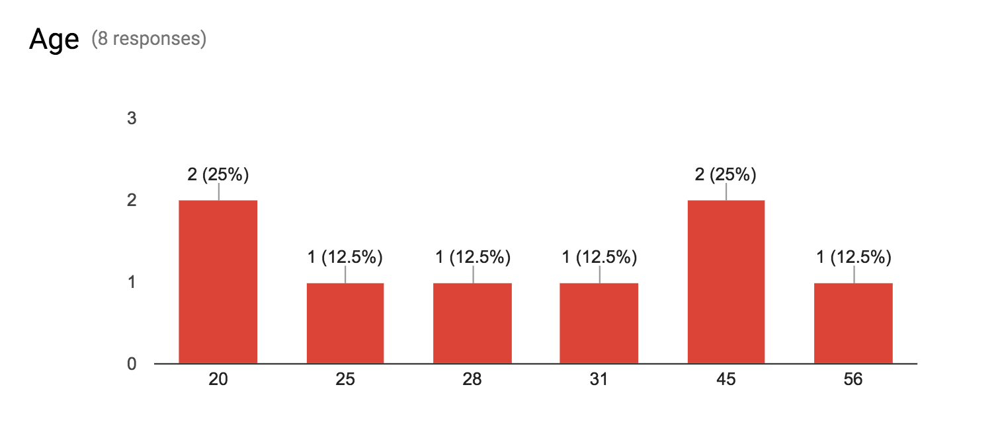
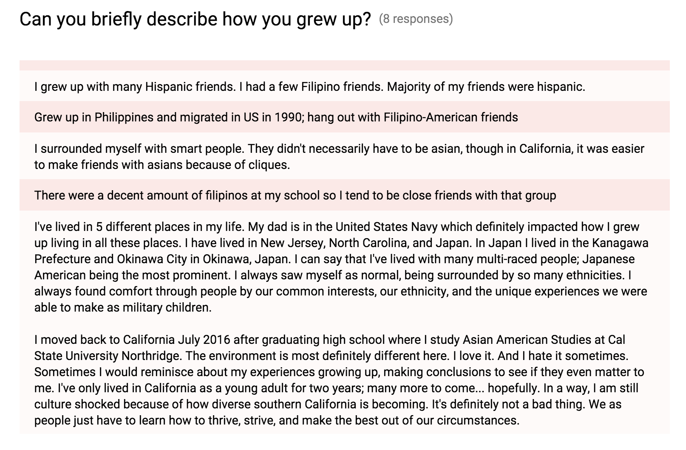
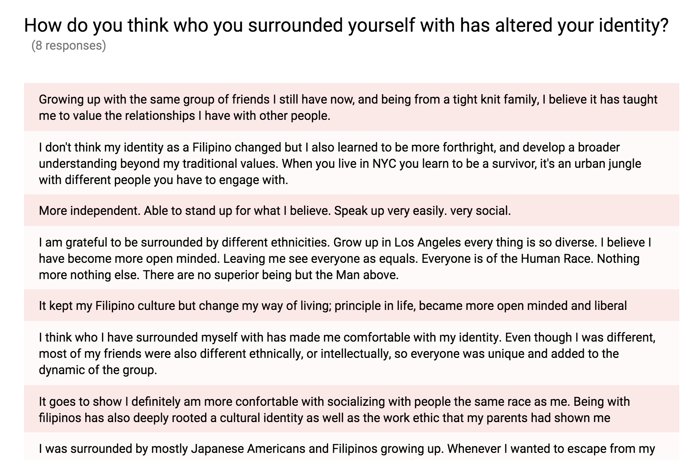
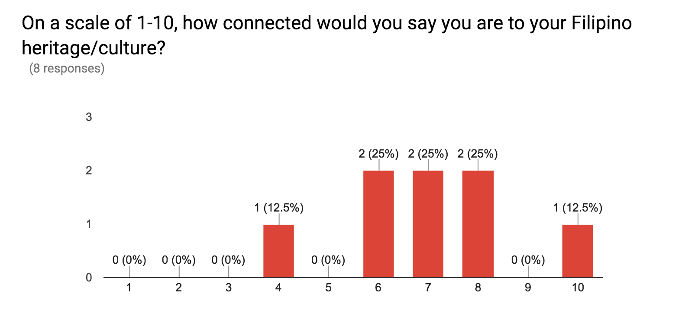
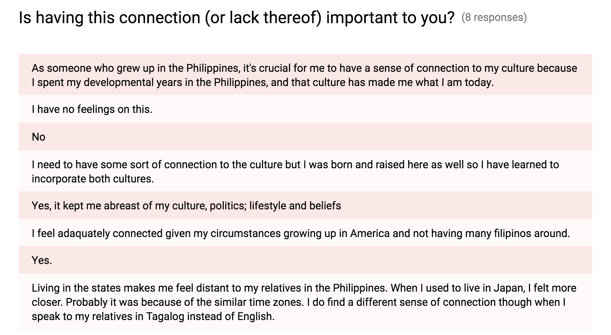
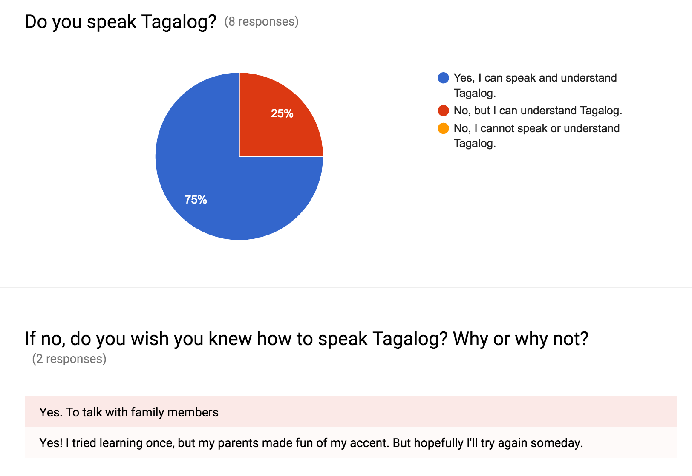
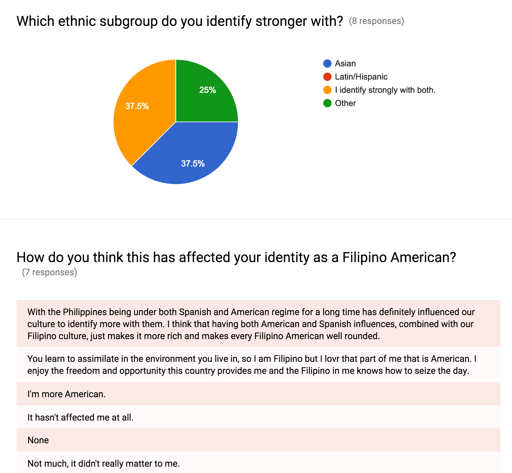
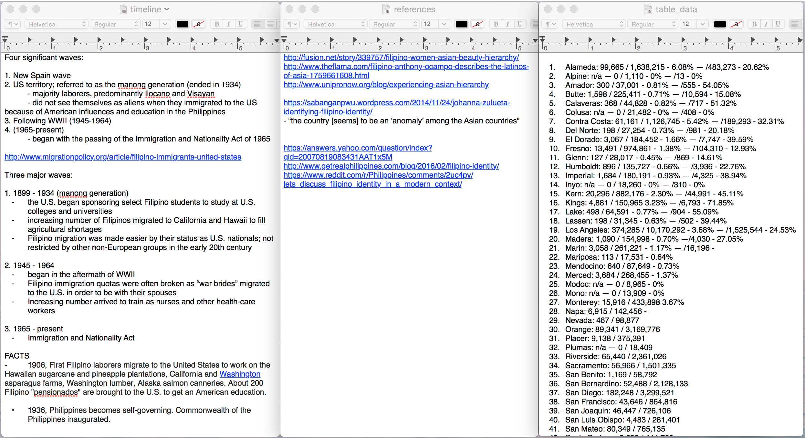

Research
Conducting research on this topic was a bit difficult in the beginning. Since I kept changing topics, it was hard to really figure out what I would end up keeping and using. Most of my research and data-driven texts/writings are derived from the history of Filipinos in America and Filipino immigration into America. Though not 100% related to my topic, knowing these statistics give the audience, Filipino or not, an important frame of reference for understanding the content since the history of Philippine colonization is a vital part to the disconnected feeling that occurs amongst young adults. Before the project was in its full fruition, I managed to conduct a very crude survey through Google Forms. Unfortunately, the data I collected became unusable as my topic transformed into something very different. Additionally, much of the submissions were from Filipino Americans either outside of my age range, born and raised in the Philippines, or both making their answers biased in a sense. See screenshots below.        
Even though I wasn’t able to conduct my own research as I had intended, the information I came across was really helpful regardless. The most tedious piece of research was for the map. Because the information itself was broad, I had to do most of the math myself in order to calculate percentages and full approximate population sizes. Contrastingly, there was an overwhelming amount of information to read through in terms of the history of Filipinos in America so consolidating everything I read into something cohesive and understandable was the challenge there. I definitely had to make sure that the dates I did choose to discard, though important in the over arching history of Filipinos in America, were essential to my story telling. I utilized .rtf files to write all my parts of research.
